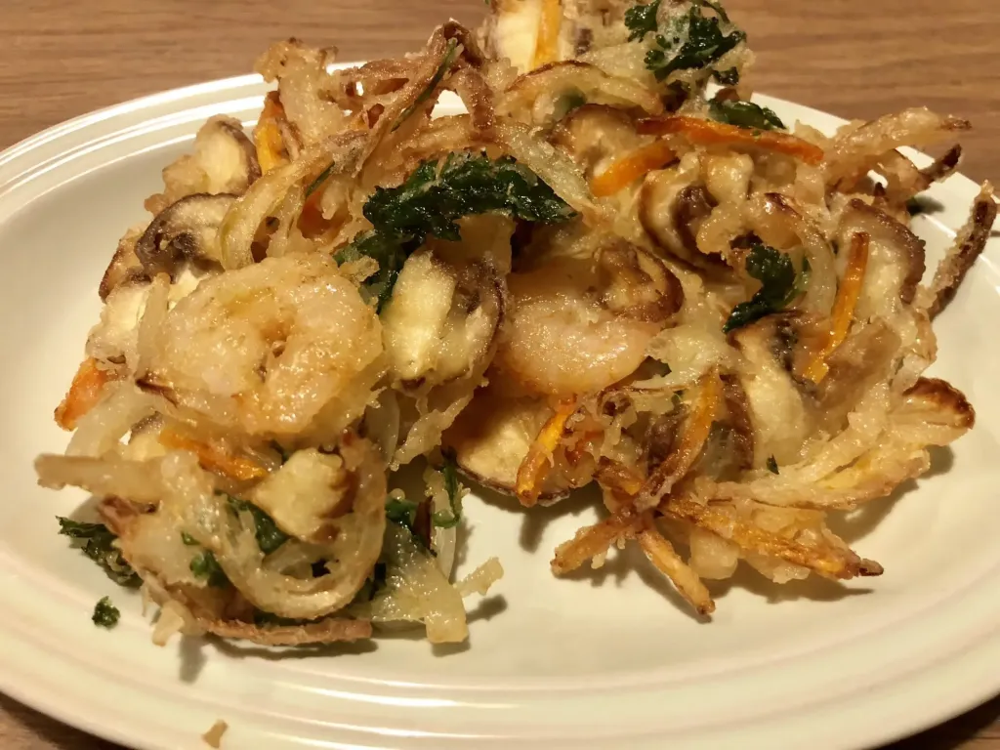

Kakiage tempura

Ingredienten
- 1 grote ui
- 5Ã gram wortel
- 2 champignons
- 10 takjes coriander
- 150 gram garnalen
- 8 eetlepels bloem
- 2 eetlepels aardappelzetmeel
- 1 eigeel
- 1/2 theelepel zout
- 150 milliliter bruisend water
- 500 milliliter olie
Bereiding
- Stap 1
Snij ui, wortel, champignon en koriander dun. Haal vocht uit met keuken papier.
- Stap 2
Voeg bloem 2-3 eetlepels toe aan groenten en garnalen en meng ze tot ze met een dun laagje bedekt zijn.
- Stap 3
Maak beslag. Doe 150 milliliter koud bruisend water in een kom en voeg 5-6 eetlepels bloem, aardappelzetmeel, zout, en een eigeel toe. Licht mengen. Niet te veel mengen anders wordt het beslag te dik!
- Stap 4
Meng bedekt groente en garnalen met het beslag.
- Stap 5
Doe olie in een diepe pan of wok tot 2-3 centimeter diep van de bodem. Verwarm olie tot 170-180 graden.
- Stap 6
Schep beslag met groente en garnalen met een pollepel en doe het zachtjes in de olie. Spreid het beslag een beetje uit.
- Stap 7
Als de onderkant goed vast gefrituurd is, dan keer het om. Frituur ze tot de onderkant mooi bruin wordt. Keer eventueel om.
- Stap 8
Haal ze uit de olie en laat uitlekken. Klaar!